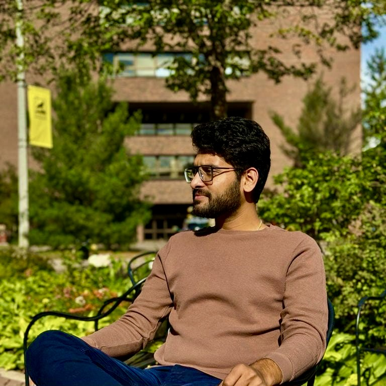

 Hi, I'm Himanshu Wagh I'm a passionate and self-driven Data Science professional and M.S. candidate at Michigan Technological University, with a strong foundation in AI, Machine Learning, and Python engineering. Combining an engineering background with hands-on research and development experience, I specialize in building data-driven and intelligent systems that bridge theory and real-world application. I've contributed to AI research, NLP, and generative modeling projects, collaborating with professors and industry teams to design scalable ML solutions. I'm actively seeking opportunities in Machine Learning, Applied AI, and Data Science—driven by curiosity, collaboration, and impact. 📧 Let's connect and build something intelligent together. Email | LinkedIn Programming Skills Python R SQL HTML/CSS NumPy Pandas Matplotlib Seaborn Scikit-learn TensorFlow PyTorch Keras Jupyter Git Docker AWS Azure GCP Tableau MySQL Redis Elasticsearch Docker Kubernetes Machine Learning Artificial Intelligence Data Science Data Engineering Deep Learning NLP LLM RAG Prompt Engineering Reinforcement Learning Generative Adversarial Networks Generative AI Computer Vision Data Analysis Statistics Time Series A/B Testing FastAPI Flask Django Jenkins CI/CD Publication DyGAF: Dynamic Graph Attention Framework for COVID-19 Biomarker Identification Bioinformatics and Biology Insights (2024) Developed an attention-based neural model for biomarker detection and COVID-19 diagnostics using gene expression data. Achieved 94.23% classification accuracy by combining deep learning with traditional ML feature selection methods. Integrated dual-model attention mechanisms to rank genes by diagnostic relevance, outperforming standard statistical approaches. Conducted KEGG, WikiPathways, and Gene Ontology analyses to validate gene significance in COVID-19 pathogenesis. Benchmarked against traditional models (e.g., DE analysis, Random Forest) and demonstrated superior performance. Made the model and codebase publicly available: GitHub Repository - DyGAF Professional Experience Graduate Research Assistant Michigan Technological University, MI, USA Aug 2024 – Feb 2025 Designed and implemented machine learning models to analyze complex genomic data, achieving 93% accuracy in predicting genetic interactions Preprocessed large-scale biomedical datasets from NCBI, applying techniques like TMM normalization and advanced feature engineering Collaborated with faculty and graduate teams to deliver scalable ML workflows for healthcare research Graduate Research Assistant Michigan Technological University, MI, USA Dec 2023 – Aug 2024 Developed DyGAF, an attention-based neural model for COVID-19 biomarker ranking — published in Bioinformatics and Biology Insights (2024) Applied Random Forest and dimensionality reduction to extract key genetic signals from RNA-seq data Led data cleaning and transformation pipelines, improving research reproducibility and ML model stability Software Engineer Fyle Technologies, Bangalore, India Oct 2021 – Apr 2023 Built an NLP pipeline for real-time receipt data extraction using Named Entity Recognition (NER), improving processing speed by 30% Contributed to backend architecture in Python and C++ for scalable document analysis Integrated AI models into production systems in collaboration with DevOps and product teams Education Savitribai Phule Pune University Bachelor of Mechanical Engineering 2017 - 2021 Projects GPT-OSS FROM SCRATCH Built the entire transformer architecture from the ground up in PyTorch. GPT-OSS - a complete implementation that actually outperforms the original GPT-2 architecture on validation loss. Full transformer architecture and trained on TinyStories dataset. Python LLM PyTorch Data Preprocessing GitHub RESEARCH PAPER TO BLOG This project is a Flask-based web application that converts research papers into detailed blog posts. The application extracts text from the PDF, processes it using OpenAI's GPT-4 model, and generates a well-structured blog post in LaTeX format. Python NLP C++ NER Github ViT FROM SCRATCH Replicated and creating a Vision Transformer (ViT) from scratch using PyTorch. Then trained ViT, a state-of-the-art computer vision architecture, to perform on Sports Classification Mini problem. Python ML Data Preprocessing Attention Github IceCube - Neutrinos in Deep Ice This project was part of the kaggle competition, goal of which is to predict a neutrino particle’s direction. Develop a model based on data from the "IceCube" detector, which observes the cosmos from deep within the South Pole ice. PyTorch GraphNet Pandas Github